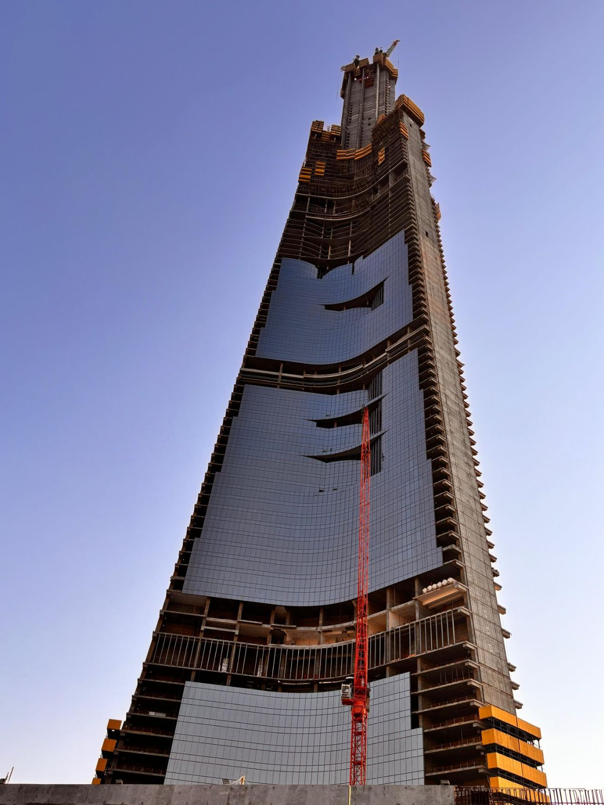
Visita técnica · setembro de 2026
Jeddah Tower
O primeiro quilômetro e o que ele ensina ao Senna Tower
FG Empreendimentos · Talls Solutions · PWD
Por que fomos
A obra mais alta do mundo em construção é o precedente mais próximo do Senna.
Ver de perto responde o que nenhum artigo responde: como o concreto sobe, como o ciclo se sustenta, como a fachada chega ao lugar.
O acesso ao canteiro é restrito. Fomos recebidos pela reputação que o Senna Tower e a Talls construíram com o Grupo FG.
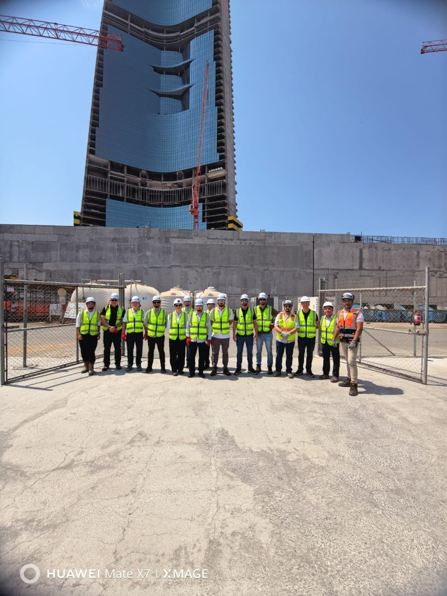
Jeddah Tower02
A visita
Um dia inteiro dentro da obra, da reunião técnica ao topo do núcleo
Fotos da visita técnica, setembro de 2026 (F137, F133, F064, F011, F104, F160).
Jeddah Tower03
Em uma página
Oito lições que levamos para o Senna
1
O núcleo dita o ritmo
Ciclo de 5 a 11 dias. O Senna mira 4.
2
Bombear com reserva
Seis linhas da base ao topo.
3
Concreto frio no calor
Capa térmica na betoneira e gelo no traço.
4
Laboratório no canteiro
Prensa de 3.000 kN e cura ao pé da obra.
5
Elevador de obra tem teto
650 m na instalação vista. Planejar acima.
6
Fachada é logística
Método de içamento definido antes da obra.
7
Segurança sobe junto
Pavimentos de refúgio e bomba de incêndio no topo.
8
Outrigger quebra o ciclo
Oito níveis especiais pedem plano próprio.
Jeddah Tower04
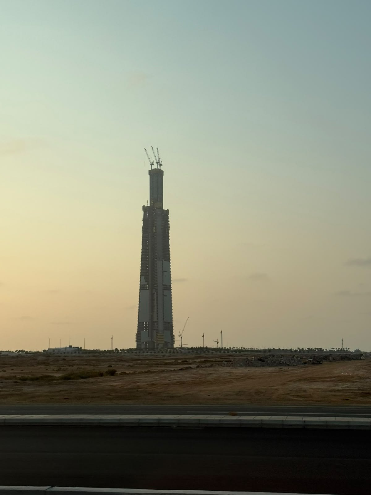
01
Parte 1 de 5
O edifício
Escala, ficha, cronologia e forma do primeiro edifício de um quilômetro.
01O edifício
02A obra que vimos
03Engenharia em profundidade
04Jeddah e Senna lado a lado
05Lições aprendidas
Mais de 1.000 m: 170 m acima do Burj Khalifa
294 m
Yachthouse T2
Brasil
+550 m
Senna Tower
em obra
1.000+ m
Jeddah Tower
em obra
Alturas arquitetônicas do CTBUH (Skyscraper Center). Senna: +550 m, comunicação da FG; o CTBUH lista 544 m.
01 · O edifício06
Realidade brasileira
A escalada da FG em Balneário Camboriú: de 100 m em 2008 a +550 m no Senna
EntregueEm obraSenna Tower
294 m · Yachthouse T2, o mais alto concluído do Brasil
100 m
2008
2010
2012
2012
2014
2018
Infinity Coast234 m
2019
2020
2020
2020
One Tower290 m
2022
2023
2024
2026
2027
2027
2027
Senna Tower+550 m
2033
Alturas e anos: FG Empreendimentos, Senna Tower Overview (dez. 2025); de 2026 em diante, previsão de entrega. Yachthouse T2: CTBUH.
01 · O edifício07
O Senna é supertall. O Jeddah é megatall.
Alto
50 m+
ou 14 pavimentos ou mais. Boa parte da orla de Balneário Camboriú.
Supertall
300 m+
Senna Tower, +550 m. O Brasil ainda não tem um concluído.
Megatall
600 m+
Jeddah Tower, mais de 1.000 m. Grupo restrito de edifícios no mundo.
CTBUH, critérios de altura (skyscrapercenter.com/criteria). O mais alto concluído do Brasil é o Yachthouse Tower 2, com 294,1 m.
01 · O edifício08
Ficha do Jeddah Tower
Item
Valor
Local
Jeddah Economic City, Arábia Saudita
Incorporador
Jeddah Economic Company; Kingdom Holding com 35,7%
Arquitetura · Estrutura
Adrian Smith + Gordon Gill · Thornton Tomasetti
Construtora · Gerenciadora
Saudi Binladin Group · Turner (desde 2025)
Fachada · Elevadores
Jangho · KONE (67 unidades)
Pavimentos
157 na contagem do proprietário; 167 no CTBUH
Último piso ocupado
654 m
Topo
L251 a 1.006 m; cobertura a 1.007 m (cotas do slide da Jangho)
Contrato de retomada
SAR 7,2 bilhões, 42 meses, outubro de 2024
Fontes: CTBUH; Kingdom Holding; Saudi Exchange; Thornton Tomasetti; Sinn et al., Concrete International 2016; slide da Jangho visto na visita (cotas).
01 · O edifício09
Programa: hotel, residências, escritórios e um mirante a 630 m
~630 m
sky terrace no L157
~350 m
acima do último piso ocupado
Cotas publicadas do sky terrace variam: 630, 638 ou 644 m, com 25 ou 30 m de diâmetro. Usamos a cota do slide da obra.
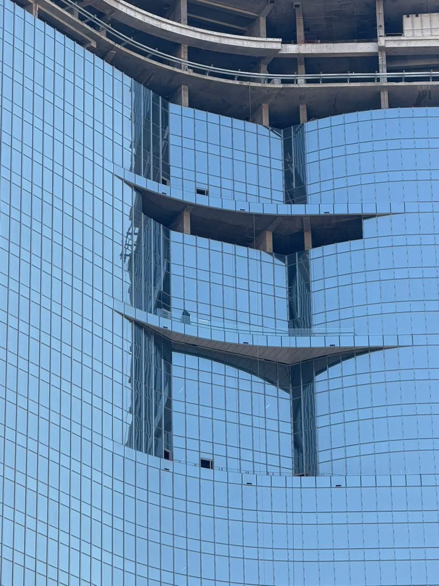
CTBUH; AS+GG; ENR, 2015; Sinn et al., 2016; slide da Jangho (F120).
01 · O edifício10
Uma obra que parou e voltou
08/2011
Anúncio do projeto
2013
Fundação: 270 estacas
01/2018
Paralisação com 63 pavimentos
10/2024
Contrato de retomada com a SBG
01/2025
Concretagem retomada
04/2026
Nível 100, 400 m
09/2026
116 pavimentos, cerca de 466 m
fim de 2028
Conclusão prevista
+53
pavimentos em 20 meses de retomada, de 63 a 116
Fontes: Saudi Exchange; ENR 2019; MEED; Thornton Tomasetti; Gulf News e Gulf Business, outubro de 2026.
01 · O edifício11
Linha do tempo
Jeddah: 17 anos do anúncio à conclusão prevista. Senna: 8 anos de obra previstos.
Jeddah Tower
Anúncio, 2011
Fundação: 270 estacas
Paralisação com 63 pavimentos
Obra parada
Contrato de retomada
116 pavimentos, ~466 m
Conclusão prevista, fim de 2028
2011
2013
2015
2017
2019
2021
2023
2025
2027
2029
2031
2033
Senna Tower
Fundação e contenção testadas e validadas; anteprojeto entregue
Início da obra, nov. 2025
Conclusão prevista, nov. 2033
17anos no Jeddah, com 7 de obra parada
8anos de obra previstos no Senna
Jeddah: Saudi Exchange; ENR; MEED; Gulf News, out. 2026. Senna: FG, Senna Tower Overview (dez. 2025); Talls, Avanços Senna Tower (2025).
01 · O edifício12
Avanço da obra: de 63 a 116 pavimentos em 20 meses
63 · concretagem retomada
Ritmo declarado de cerca de 5 dias por pavimento em março. Média de cerca de 10,8 dias entre abril e setembro.
Pavimento do núcleo informado em notícias: MEED, AS+GG, Thornton Tomasetti, Kingdom Holding, Newsweek, Gulf News. Média: cálculo Talls.
01 · O edifício13
Um tripé que se afina e confunde o vento
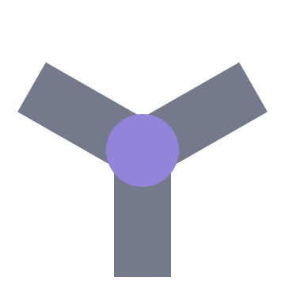
Três alas em Y em volta de um núcleo central.
Cada ala termina numa altura diferente. A torre afina com a altura, uma estratégia aerodinâmica do projeto.
No dia da visita: núcleo na frente, alas em degraus atrás, fachada em blocos mais abaixo. Três gruas de lança basculante no topo.
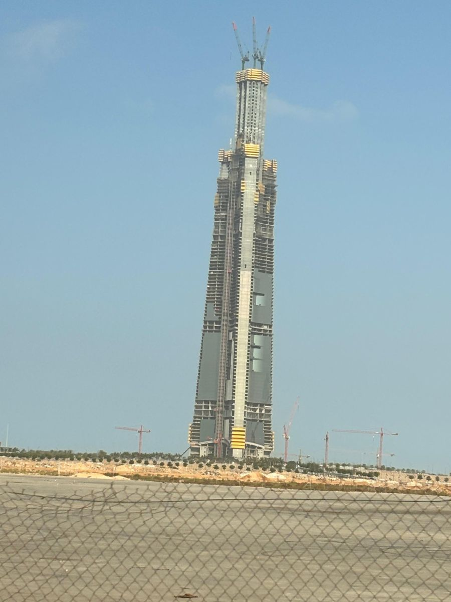
Fontes: AS+GG; Sinn et al., 2016. Foto da visita.
01 · O edifício14
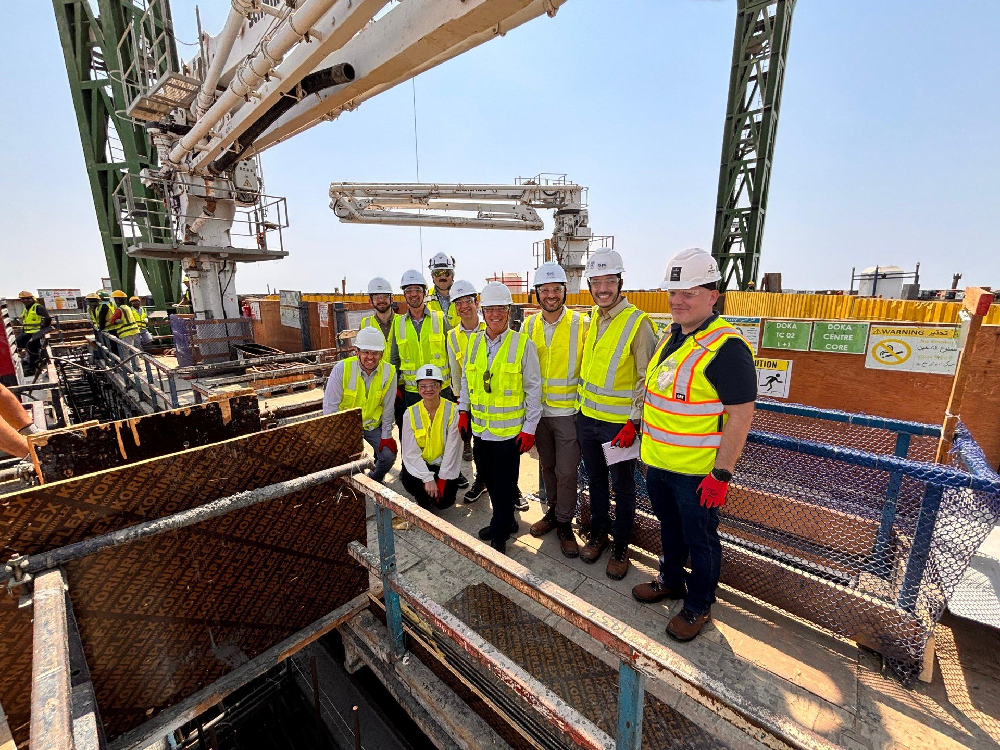
02
Parte 2 de 5
A obra que vimos
Do topo do núcleo à central de bombas, com o que cada ponto ensina.
01O edifício
02A obra que vimos
03Engenharia em profundidade
04Jeddah e Senna lado a lado
05Lições aprendidas
No topo do núcleo
Concretagem em curso, ao lado dos mastros e das gruas
- Dois mastros distribuidores de concreto sobre colunas no topo.
- Grua de lança basculante e plataforma a céu aberto.
- O mangote desce entre as armaduras da parede, posicionado para lançar.
Vídeo da visita · roda na apresentação
V01 · lançamento na parede
Vídeos da visita (V06, V01).
02 · A obra que vimos16
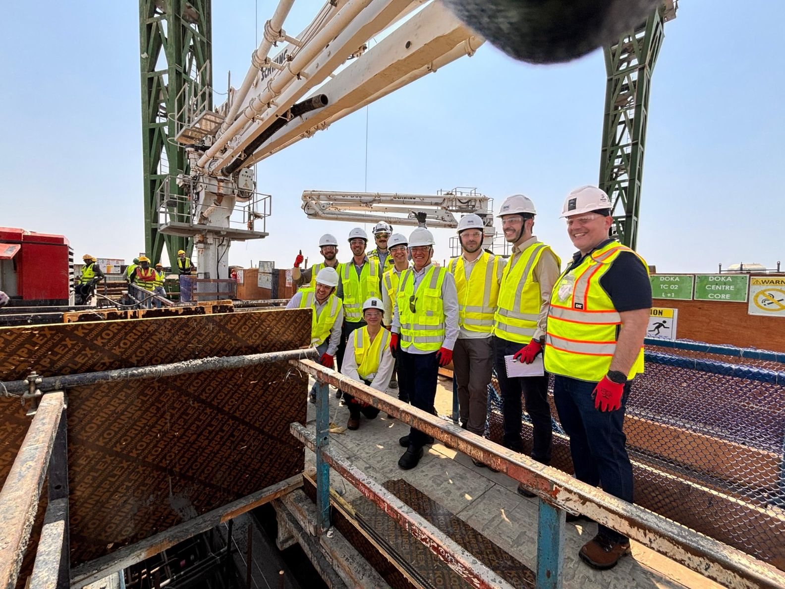
Topo do núcleo
Trepante, dois mastros de concreto e três gruas
- Placas "DOKA / CENTRE / CORE" na plataforma.
- Mastros distribuidores Schwing; um deles SPB 32.
- Gruas Favelle Favco de lança basculante: duas M390D e uma M390DS, 32 t.
- O núcleo sobe vários pavimentos à frente das alas.
Lição 1 · O núcleo dita o ritmo
Fotos da visita (F085, F020, F083). Gruas: Crane Briefing, 08/10/2025.
02 · A obra que vimos17
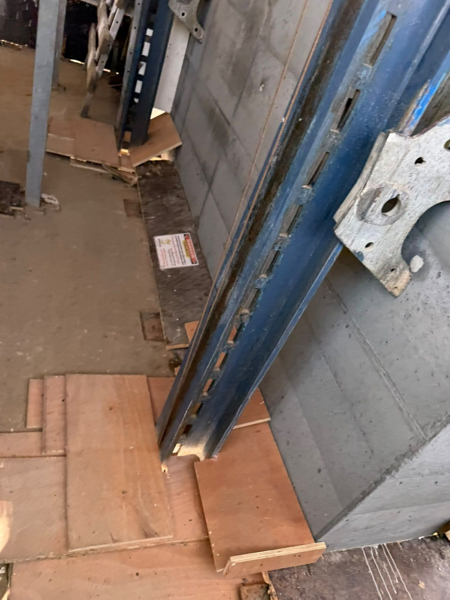
Fôrmas
Autotrepante Doka: a fábrica que sobe com a torre
- Perfil de escalada perfurado e sapatas ancoradas na parede.
- Telas de proteção amarelas em vários níveis.
- Vigas H20 e compensado plastificado no cimbramento de laje.
- Release Doka de 2014: SKE100 plus, Dokadek 30, tela Xclimb 60.
Lição 1 · O núcleo dita o ritmo
Fotos da visita (F029, F017, F027). Doka, release "Kingdom Tower", 22/01/2014.
02 · A obra que vimos18
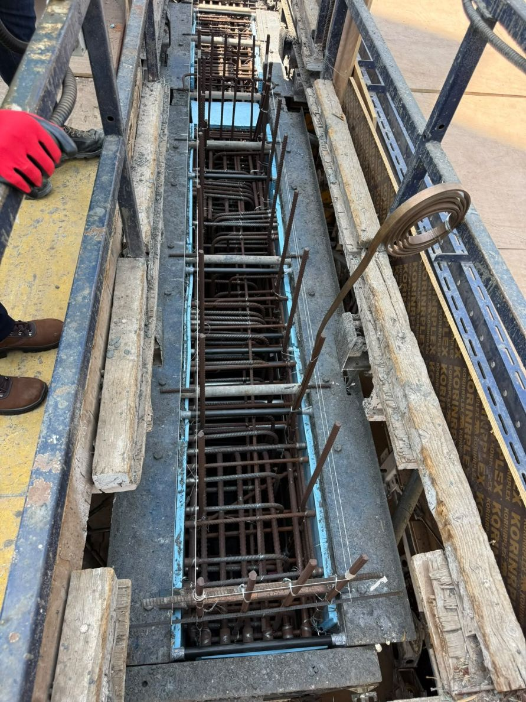
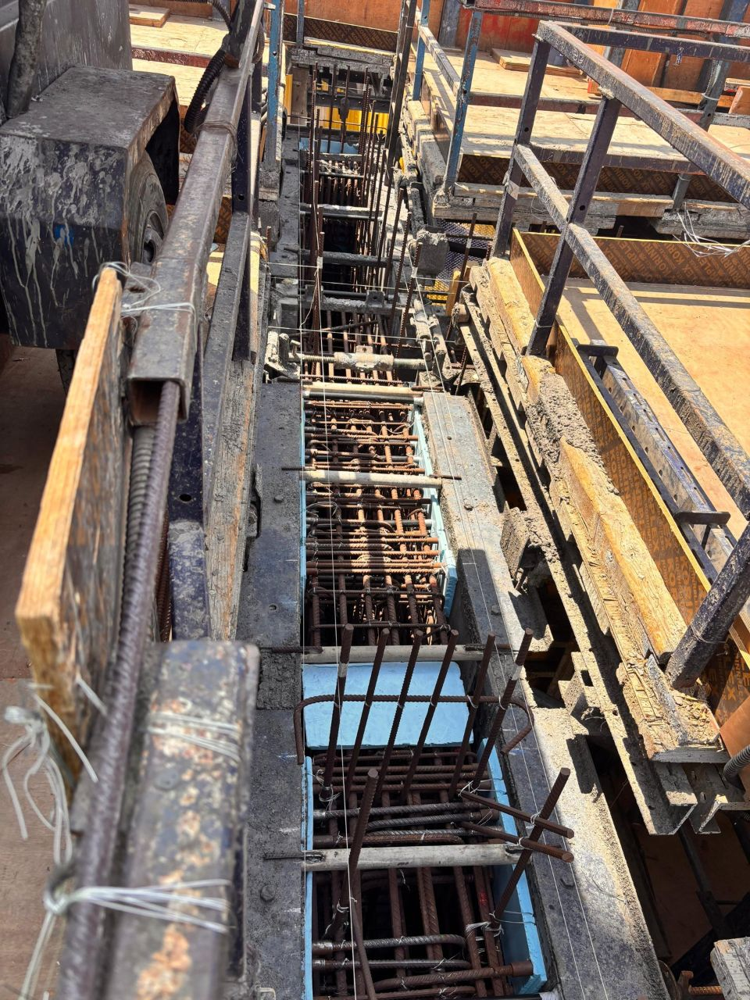
Armadura
Paredes densas, emendas mecânicas, esperas para tudo
- Luvas protegidas no topo das barras verticais.
- Barras transversais com terminais.
- Negativos de espuma para ligações de vigas e lajes.
- Aço de 520 MPa nos 300 m inferiores e 420 MPa nas demais regiões.
Lição 8 · Outrigger quebra o ciclo
Fotos da visita (F026, F080). Aço: Sinn, Peronto e Huizinga, Concrete International, 2016.
02 · A obra que vimos19
Do topo, cerca de 466 m
A sombra da torre atravessa o pódio e o canteiro
Foto da visita (F019). Altura do topo em set. 2026: Gulf News e Gulf Business, outubro de 2026.
Subindo pela fachada
O elevador de obra corre por fora, pela fachada já envidraçada
- Cabine de cremalheira no mastro externo.
- Pavimentos sem vidro ficam abertos para carga e acesso.
- Do terraço em reentrância, o canteiro e o deserto lá embaixo.
Vídeo da visita · roda na apresentação
Vídeos da visita (V09, V16).
02 · A obra que vimos21
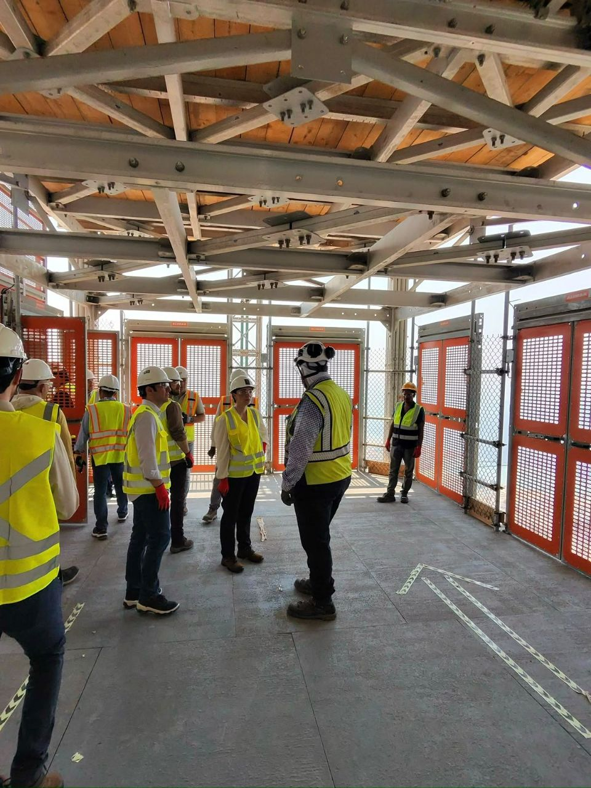
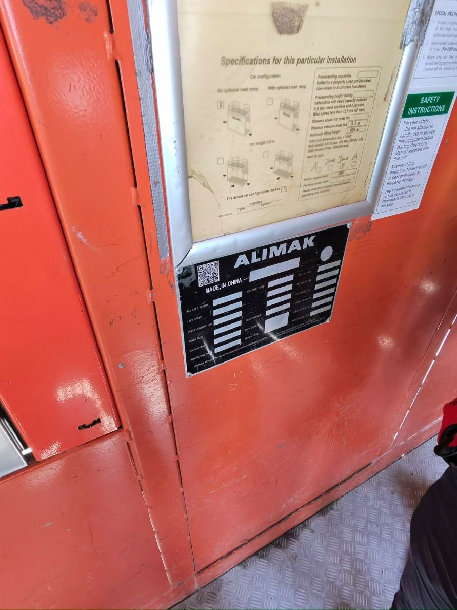
Transporte vertical em obra
A instalação de elevador de obra vista vai até 650 m
- Placa da instalação: elevação máxima de 650 m e ancoragem do mastro a cada 9,0 m.
- Pelo menos cinco cabines Alimak numa mesma plataforma de embarque.
- O pedido da KONE inclui dois JumpLift, elevadores definitivos que sobem com a obra.
Lição 5 · Elevador de obra tem teto
Fotos da visita (F052, F051). KONE, release de 08/10/2025.
02 · A obra que vimos22
Transporte vertical definitivo: 67 equipamentos KONE
Quatro elevadores usam cabo UltraRope, de fibra de carbono, com percurso acima de 630 m.
Jeddah Tower
67
equipamentos KONE, com 4 elevadores em UltraRope
Senna Tower
8
elevadores no site oficial; a imprensa de 2025 cita 7
KONE, release de 08/10/2025; Elevator World, 13/10/2025. Senna: sennatower.com.
02 · A obra que vimos23
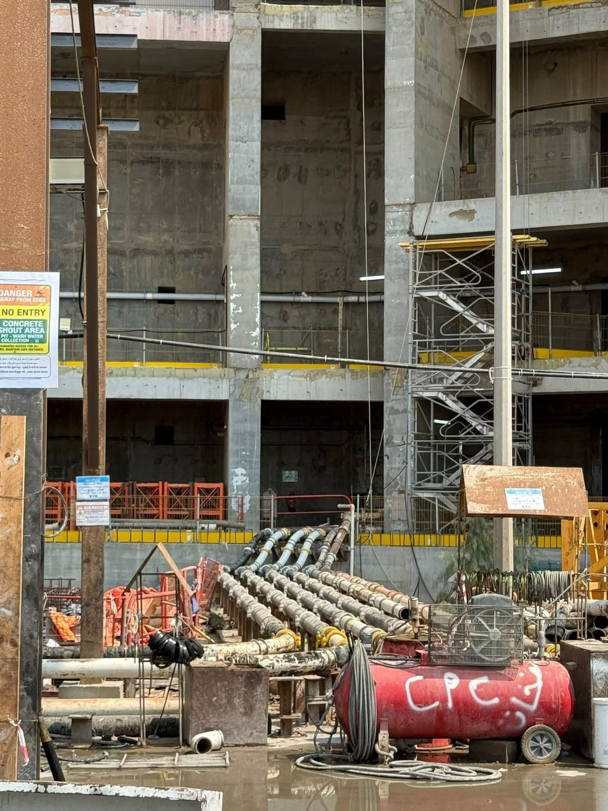
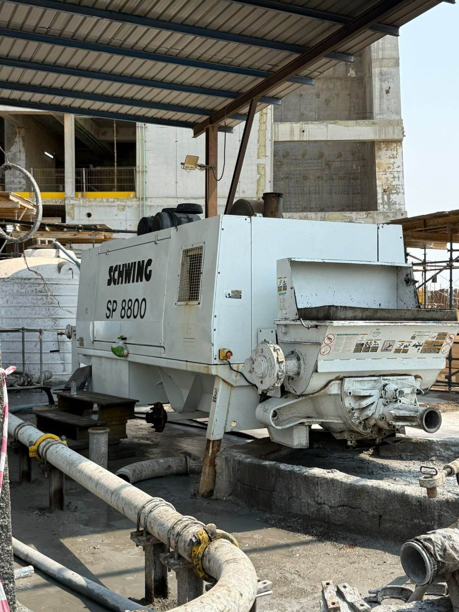
Bombeamento · base
Seis linhas saem do pé da torre
- Bombas estacionárias numeradas, betoneira descarregando direto na tremonha.
- Em 2015: quatro Schwing SP 8800 D, até 243 bar no concreto.
- Estágio único, sem rebombeamento, segundo Peronto, da Thornton Tomasetti, à Newsweek.
Lição 2 · Bombear com reserva
Fotos da visita (F124, F125). The Construction Index, 2015; ficha Schwing SP 8800; Newsweek, 07/2026.
02 · A obra que vimos24
Na base da torre
A central de bombas e o concreto chegando
- Concreto coeso caindo na tremonha da bomba.
- Betoneira com o tambor coberto por capa térmica.
- Bombas estacionárias sob cobertura metálica, ao pé da torre.
Vídeo da visita · roda na apresentação
Vídeos da visita (V31, V34).
02 · A obra que vimos25
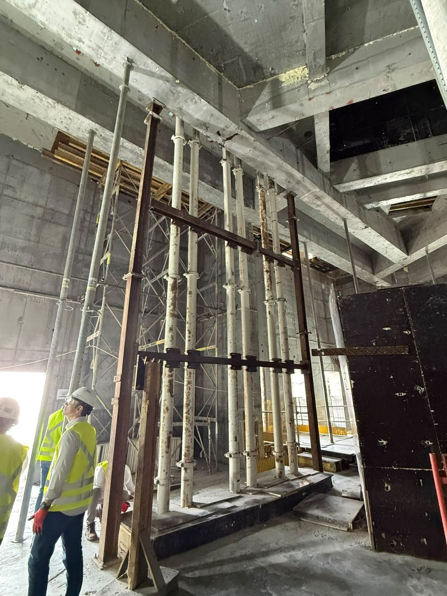
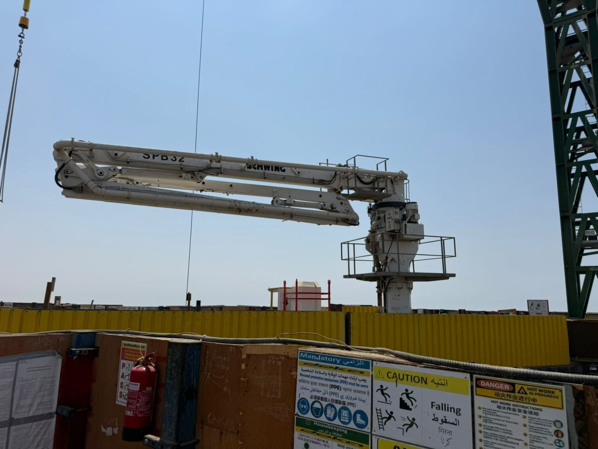
Bombeamento · prumada e topo
Três pares de tubos atravessam as lajes
- Seis tubos fixados com travessas e grampos em U.
- Diâmetro externo de 12 a 15 cm, estimativa visual.
- No topo, mastro Schwing SPB 32: 32 m de alcance.
- Em 2015 eram mastros SPB 35 e SPB 30.
Lição 2 · Bombear com reserva
Fotos da visita (F039, F020). Schwing-Stetter, linha atual de mastros; The Construction Index, 2015.
02 · A obra que vimos26
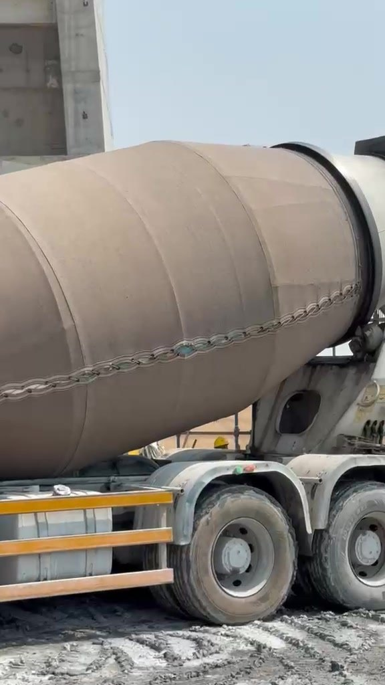
Concreto em clima quente
O tambor de toda betoneira vem vestido
- Capa térmica integral no tambor das betoneiras.
- Gelo na água de amassamento do radier e do traço de 85 MPa.
- Instalação com aspecto de central de concreto vista do alto da torre.
Lição 3 · Concreto frio no calor
Vídeo da visita (V34) e foto F063. Gelo: Sinn et al., 2016; Sinn e Peronto, ACI 2019.
02 · A obra que vimos27
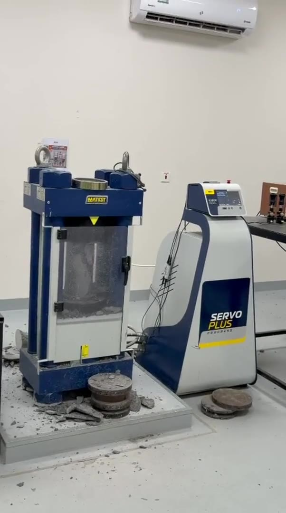
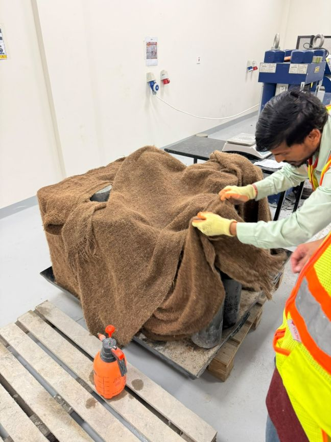
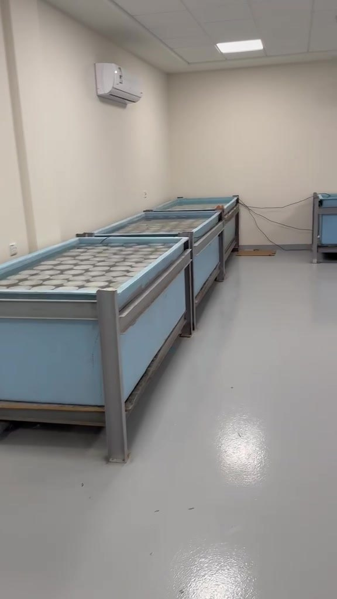
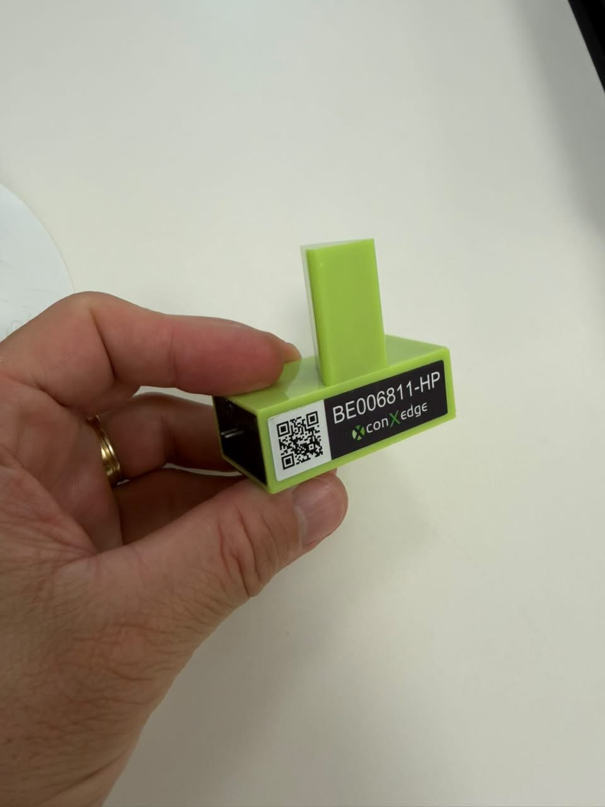
Controle tecnológico
O laboratório fica ao pé da obra
- Prensa Matest de 3.000 kN.
- Cerca de 20 tanques de cura por imersão.
- Corpos de prova marcados "C-85".
- Sensor sem fio conXedge de temperatura e maturidade.
- Projeto: 85 MPa aos 90 dias e módulo de 43 GPa.
Lição 4 · Laboratório no canteiro
Fotos e vídeos da visita (V38, F103, V22, F143). Especificação: Sinn et al., 2016. conXedge.com.
02 · A obra que vimos28
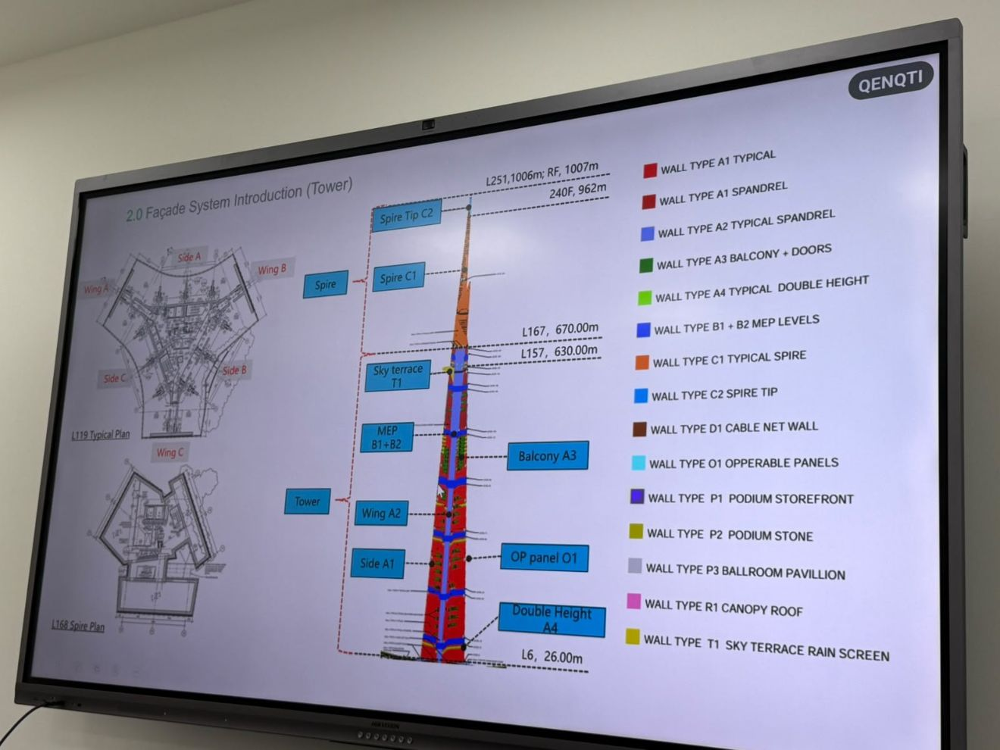
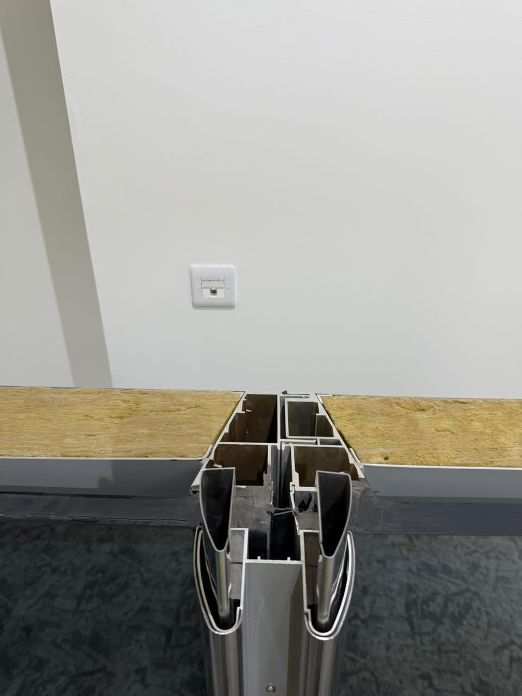
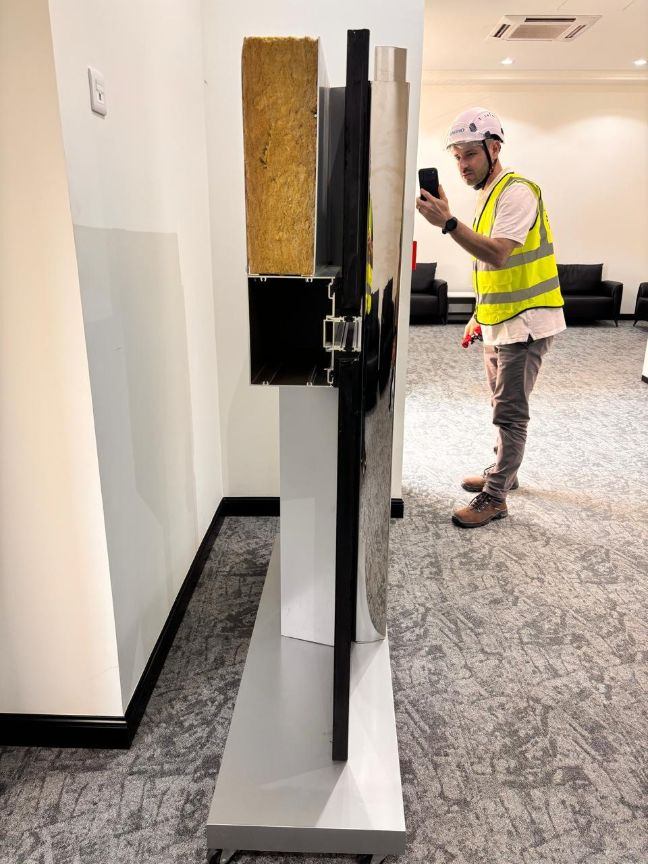
Fachada · sistema
Quinze tipos de parede numa só torre
- Fachada unitizada da Jangho, contrato de SAR 1,052 bilhão.
- Montante multicâmara com encaixe macho-fêmea, isolamento no spandrel, aleta vertical espelhada.
- Primeiro painel da retomada: 1,5 x 5,3 m e 450 kg, no L18.
Lição 6 · Fachada é logística
Slide da Jangho e amostras vistas na visita (F120, F155, F090). STCN, 25/06/2025; Jangho, 03/12/2025.
02 · A obra que vimos29
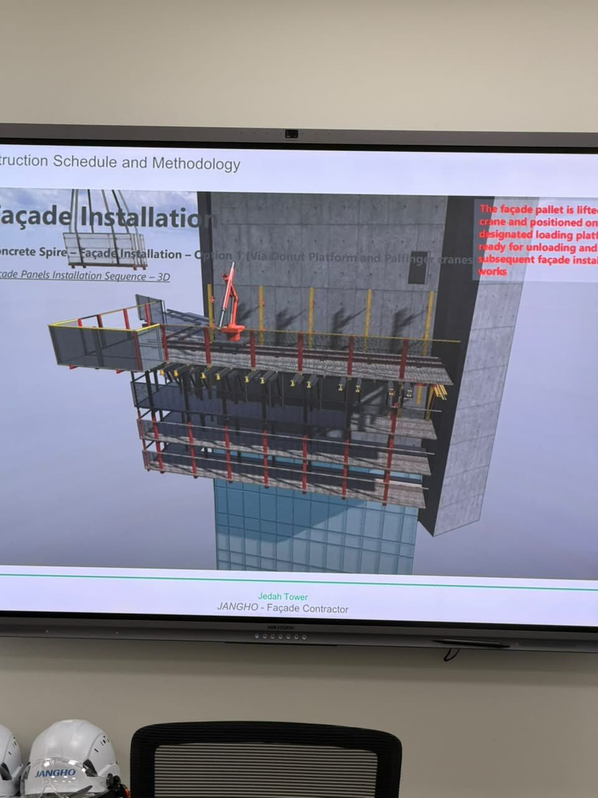
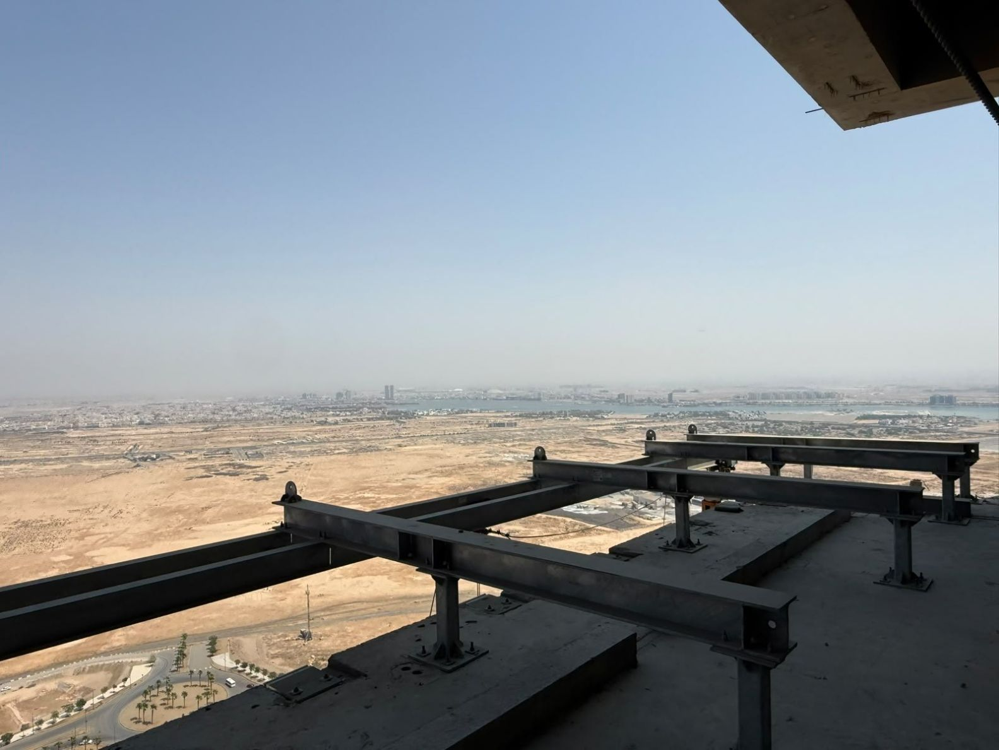
Fachada · instalação
O painel sobe por grua até plataformas de carga
- Palete içado por grua até uma plataforma de carga; de lá segue para a instalação.
- No pináculo: plataforma anelar e guindastes Palfinger.
- Vigas galvanizadas em balanço na borda das lajes, com trilho externo duplo.
Lição 6 · Fachada é logística
Slide da Jangho e fotos da visita (F158, F115, F148).
02 · A obra que vimos30
Fachada · terraços
Terraços em reentrância e bordas curvas em balanço
- Cantoneiras com dois parafusos ancoram o topo dos painéis no fundo da laje.
- Ancoragens de piso em sequência na borda dos terraços.
- Guarda-corpo de vidro com corrimão e aletas verticais espelhadas.
Lição 6 · Fachada é logística
Fotos e vídeos da visita (F142, F145, F108, V26).
02 · A obra que vimos31
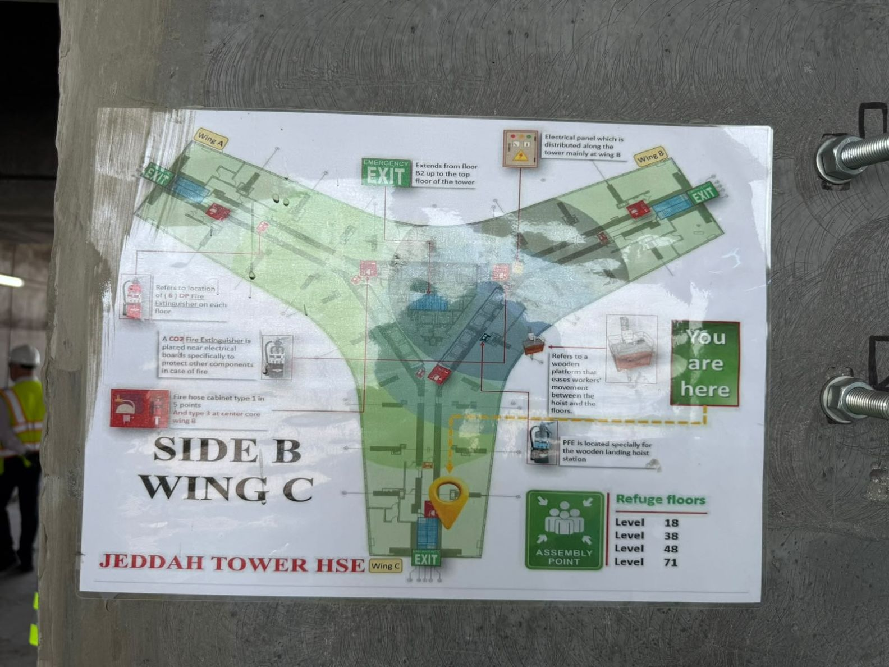
Segurança em obra
Pavimentos de refúgio e combate a incêndio que sobem com a torre
- Pavimentos de refúgio indicados na planta de obra: 18, 38, 48 e 71.
- Escada de emergência do B2 ao topo.
- Extintor de pó em 6 pontos por pavimento; abrigos de mangueira.
- Bomba de incêndio provisória no topo.
Lição 7 · Segurança sobe junto
Fotos da visita (F065, F161 a F163).
02 · A obra que vimos32
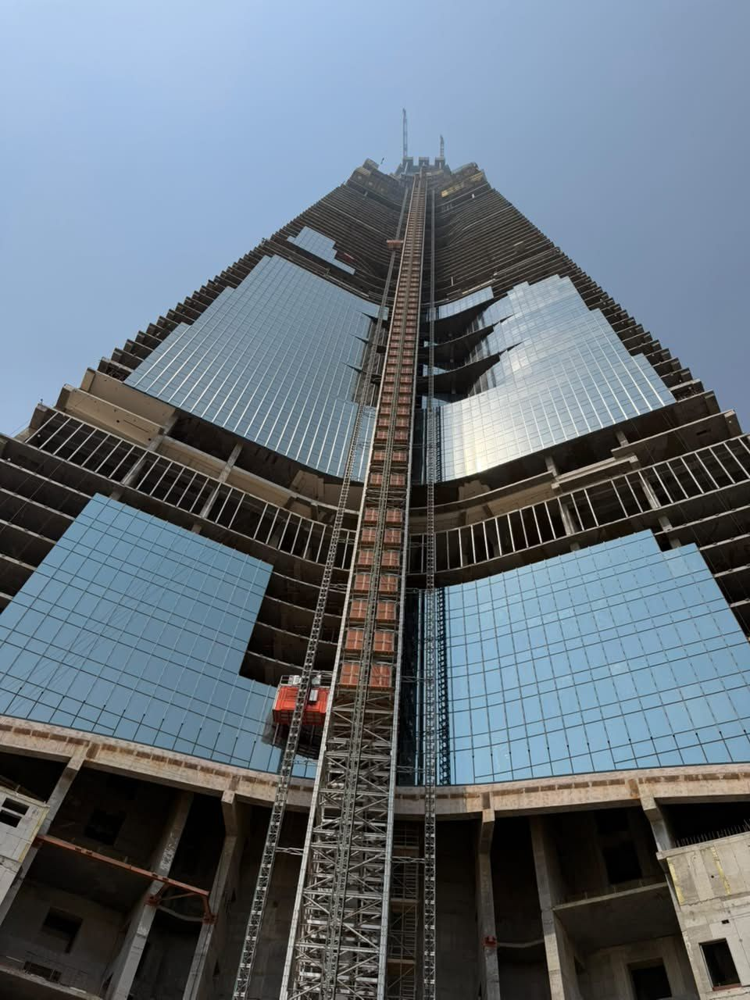
03
Parte 3 de 5
Engenharia em profundidade
Sistema estrutural, comportamento global, vento, movimento do topo, fundação e concreto.
01O edifício
02A obra que vimos
03Engenharia em profundidade
04Jeddah e Senna lado a lado
05Lições aprendidas
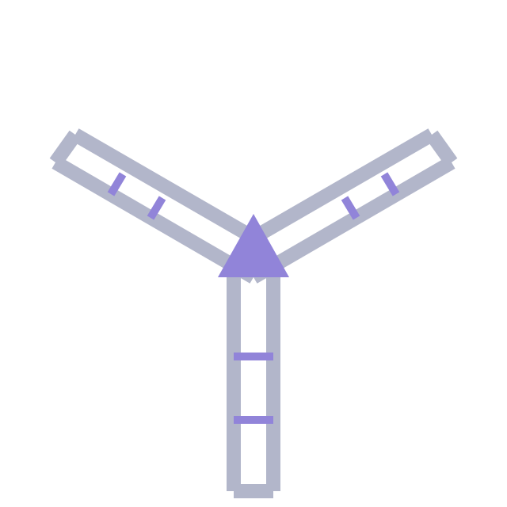
Paredes em Y, sem pilares, com outriggers nos andares técnicos
Paredes portantes de concreto armado nas três alas, ligadas ao núcleo e entre si por vigas de acoplamento. Laje plana, mínimo de 250 mm. Piso a piso de 4 m.
800
mm no núcleo e nas paredes-aleta
1.000
mm em corredor e escada
1.200
mm nas pontas das alas
Espessuras na base, projeto de 2016: Sinn, Peronto e Huizinga, Concrete International. Conceito reafirmado pela Thornton Tomasetti em 20/04/2026.
03 · Engenharia em profundidade34
Comportamento global e vento
12:1
esbeltez, altura sobre menor largura
12 s · 6 s
períodos de translação e de torção, cerca de
7 milli-g
aceleração prevista a 654 m, vento de 1 ano
42,2 m/s
velocidade básica, rajada de 3 s, 50 anos (SBC 301)
4 ensaios
no RWDI: HFFB 1:800, pressões 1:600 e 1:400, aeroelástico 1:600
−20%
nas velocidades de serviço, com estudo de clima em altitude (WRF)
Amortecimento: o projeto de 2016 dispensou amortecedor no corpo ocupado. Na visita, a equipe informou 3 níveis de amortecedores no pináculo.
Sinn et al., Concrete International, 2016; Galsworthy, STRUCTURE, 2016; ficha CTBUH; ENR, 2015. Revisão do túnel no BLWTL.
03 · Engenharia em profundidade35
O topo em movimento
Oscilação do topo: versão 1 e versão atual
6 m
±3 m, metálico
3 m
±1,5 m, concreto
3 níveis de amortecedores
a massa clara corre contra o topo
Informação recebida na visita técnica, set. 2026. Animação esquemática: deslocamento exagerado, tempo fora de escala.
03 · Engenharia em profundidade36
Oscilação total do topo
−50%
Pináculo de concreto e 3 níveis de amortecedores levaram o topo de 6 m para 3 m de oscilação.
Informação recebida na visita técnica ao Jeddah Tower, set. 2026. Faixas em escala entre si.
03 · Engenharia em profundidade37
Como um amortecedor de massa trabalha
1. O vento faz o topo oscilar no período próprio da estrutura.
2. A massa é sintonizada nesse período e se move atrasada um quarto de ciclo.
3. A força da massa age contra o movimento do topo, e os amortecedores dissipam a energia.
Jeddah: 3 níveis no pináculo. Senna: 2 TMD.
Princípio do amortecedor de massa sintonizado (TMD). Animação esquemática. Jeddah: visita técnica, set. 2026. Senna: PWD, set. 2026.
03 · Engenharia em profundidade38
Fundação: poucas estacas, muito longas
270
estacas escavadas, Ø 1,5 e 1,8 m
~110 m
estaca mais longa (105 m no projeto)
4,5 a 5 m
radier, autoadensável de 60 MPa
~110 mm
recalque previsto, diferencial abaixo de 20 mm
Radier estaqueado. Provas com células Osterberg. Proteção catódica nas estacas e na armadura inferior do radier. Carga total de 860.000 t.
Calcário coralíneo · ~50 m
Argilito e cascalho · ~10 m
Arenito decomposto · ~40 m
Sinn et al., Concrete International, 2016; KHL (estacas da Bauer); ENR, 2015. Perfil esquemático, fora de escala.
03 · Engenharia em profundidade39
Concreto da superestrutura: 85, 75 e 65 MPa aos 90 dias
Item
Valor
Classes
85 MPa no trecho inferior, 75 MPa no terço médio, 65 MPa no terço superior (cilindro, 90 dias)
Módulo
Média de 43 GPa aos 90 dias, estático
Traço de 85 MPa
a/agl 0,25; cimento, sílica ativa e cinza volante; brita de 3/8"; policarboxilato e VMA; gelo
Resultados
Acima de 100 MPa em ensaio
Aplicação
C85 autoadensável previsto até cerca de 400 m (plano de 2015)
Sinn et al., Concrete International, 2016; Sinn e Peronto, ACI Web Session, 2019; The Construction Index, 2015.
03 · Engenharia em profundidade40
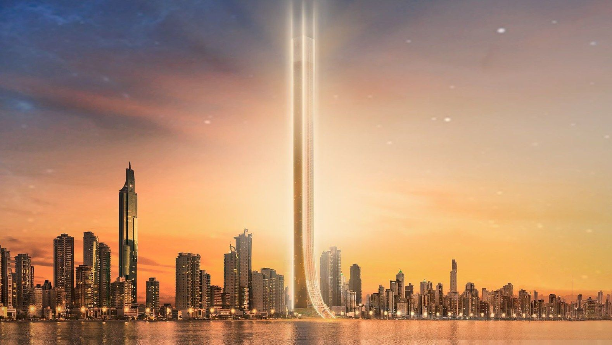
04
Parte 4 de 5
Jeddah e Senna lado a lado
157 pavimentos na contagem dos dois proprietários. Respostas de engenharia diferentes, com números e imagens das duas obras.
01O edifício
02A obra que vimos
03Engenharia em profundidade
04Jeddah e Senna lado a lado
05Lições aprendidas
Do outro lado da comparação
O Senna Tower em números
+550 m
altura, 157 pavimentos
798
estacas hélice contínua, Ø 60 cm, até 40 m
4,9 m
de bloco, 1.660 m², fck 70 MPa
2.000 tf
maior prova de carga, em 17 estacas de teste
100 MPa
fck da fundação ao 23º pavimento
50 GPa
Ecs no trecho inferior
8
níveis de outrigger e cinta
2
amortecedores de massa sintonizada
PWD, "Senna Tower: The challenges of concrete in the Latin American giant", set. 2026. Altura: comunicação da FG.
04 · Jeddah e Senna lado a lado42
Realidade brasileira x Senna
O Senna leva a engenharia brasileira além da referência em quatro frentes
Alturao mais alto concluído no Brasil
+87%
Ciclo por pavimentohistórico da equipe x meta
7 dias · 1 laje por semana −3 dias
Bombeamentomaior campanha medida no Brasil
200,5 m de linha · Infinity Coast, 220 bar +550 m de altura a vencer 2,7×
Concretoclasse da superestrutura
C90 · limite da ABNT NBR 6118 100 MPa · fck até o 23º pavimento +10 MPa
CTBUH; PWD, set. 2026; PWD e Hickel (2022); ABNT NBR 6118:2023, item 1.2. Bombeamento: linha medida no Infinity Coast x altura a vencer no Senna.
04 · Jeddah e Senna lado a lado43
Jeddah x Senna, lado a lado
Jeddah
Senna
Concreto mais forte
85 MPa
100 MPa
Módulo de elasticidade
43 GPa
50 GPa
Estacas · mais longa
270 · 110 m
798 · 40 m
Rigidez extra
Y e outriggers
8 outriggers
Ciclo por pavimento
5 a 11 dias
meta 4 dias
04 · Jeddah e Senna lado a lado44
Estrutura: paredes em Y contra núcleo, outriggers nas duas
Tema
Sistema
Paredes portantes em Y com vigas de acoplamento
Núcleo rígido, lajes planas e pilares periféricos
Rigidez extra
Planta em Y e outriggers nos andares técnicos (visita)
8 níveis de outrigger e cinta
Amortecimento
3 níveis no pináculo (visita); corpo sem amortecedor
2 TMD lado a lado, abaixo do crown
Jeddah: Sinn et al., 2016; foto e informação da visita (F119). Senna: PWD, set. 2026; Talls (modelo estrutural).
04 · Jeddah e Senna lado a lado45
Controle do movimento: onde cada torre põe a massa
Jeddah
3 níveis
de amortecedores no pináculo. O corpo ocupado não leva amortecedor: o projeto de 2016 previa 7 milli-g a 654 m sem ele.
Topo: 6 m de oscilação no metálico, 3 m no concreto.
Senna
2 TMD
lado a lado, abaixo do crown, somados a 8 níveis de outrigger e cinta. A massa trabalha pelo conforto de quem mora lá.
Deslocamento e aceleração no topo: [Talls]
Jeddah: informação da visita; Sinn et al., 2016. Senna: PWD, set. 2026.
04 · Jeddah e Senna lado a lado46
Onde cada torre controla o movimento, na mesma escala de altura
Jeddah, 1.000+ m
3 níveis de amortecedores no pináculo
Paredes em Y e outriggers nos andares técnicos
Senna, +550 m
2 TMD lado a lado, abaixo do crown
8 níveis de outrigger e cinta
Alturas na mesma escala. Níveis de outrigger esquemáticos; movimento ilustrativo, sem escala. Jeddah: visita, set. 2026. Senna: PWD, set. 2026; Talls.
04 · Jeddah e Senna lado a lado47
Concreto: o Senna especifica classe e módulo mais altos
Tema
Jeddah Tower
85 MPa
f'c aos 90 dias · 43 GPa
Senna Tower
100 MPa
fck · Ecs de 50 GPa
Escalonamento
85, 75, 65 MPa
100, 90, 80, 70, 60 MPa; lajes de 75 a 50 MPa
Resultados
Acima de 100 MPa em ensaio
125,2 MPa e Ecs de 53,95 GPa (2023); 110,6 MPa e Eci de 57,9 GPa em campo (2025)
Calor
Gelo no traço; capa térmica nas betoneiras
Gelo no bloco de fundação
Bases de ensaio diferentes: f'c de cilindro (ACI) no Jeddah, fck (NBR 6118) no Senna.
Jeddah: Sinn et al., 2016. Senna: PWD, set. 2026.
04 · Jeddah e Senna lado a lado48
Resistência ao longo da altura
O Jeddah escalona em três faixas, de 85 a 65 MPa. O Senna escalona em cinco, de 100 a 60 MPa, e começa 15 MPa acima.
Quanto mais clara a faixa, maior a resistência.
Altura relativa. Jeddah em terços da altura; Senna por faixa de pavimentos. Bases de ensaio diferentes: f'c aos 90 dias (ACI) e fck (NBR 6118).
Jeddah: Sinn et al., Concrete International, 2016. Senna: PWD, set. 2026. Valores em MPa.
04 · Jeddah e Senna lado a lado49
Concreto frio no calor
Duas obras, o mesmo inimigo: o calor de hidratação
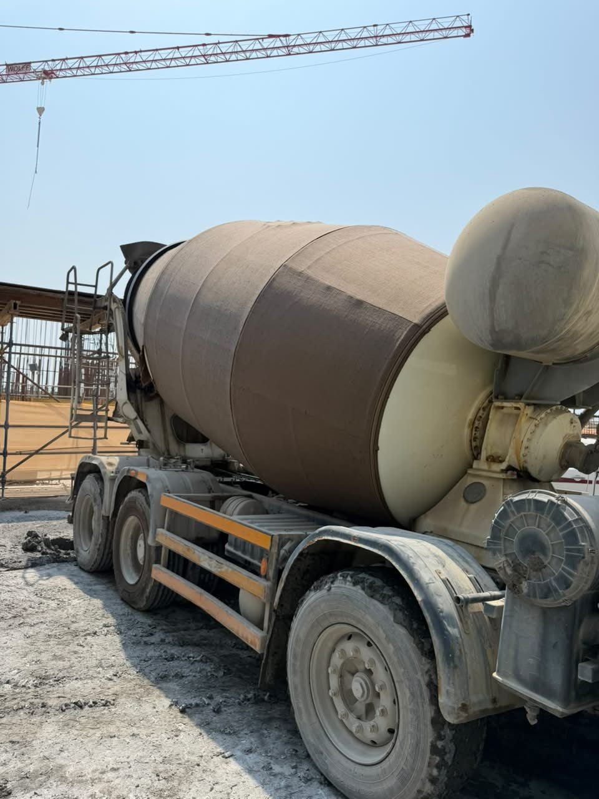
Jeddah. Capa térmica no tambor de toda betoneira e gelo na água de amassamento.
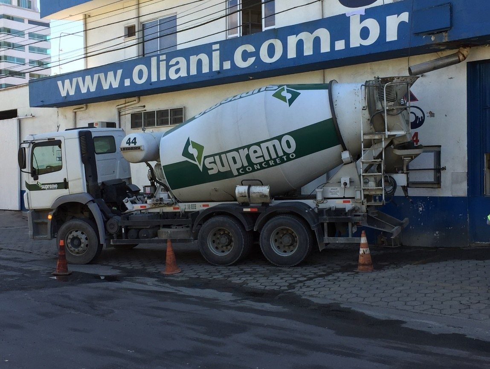
Senna. Gelo no bloco de fundação. A PWD já executou mais de 100 blocos de concreto massa.
Jeddah: foto da visita (F159); Sinn et al., 2016. Senna: PWD, set. 2026 (foto do bloco).
04 · Jeddah e Senna lado a lado50
Concreto massa: o traço de baixo calor esquenta menos e mantém a resistência
Cerca de 12 °C a menos no pico, com a mesma resistência aos 28 e aos 63 dias. No Jeddah, o radier usou cerca de 50% de cinza volante e gelo para ficar abaixo de 68 °C.
Senna: PWD, mock-up de janeiro de 2026 (picos lidos do gráfico; fc médio de dois corpos de prova em cada idade). Jeddah: Sinn et al., 2016.
04 · Jeddah e Senna lado a lado51
Fundação: solos opostos, soluções opostas
Tema
Jeddah Tower
270
estacas escavadas, Ø 1,5 e 1,8 m, até ~110 m
Bloco ou radier
Radier de 4,5 a 5 m, 60 MPa aos 56 dias
Bloco de 1.660 m² e 4,9 m, fck 70 MPa
Estacas
Poucas, muito largas e muito longas
Quase 800 hélice contínua, Ø 60 cm, até 40 m, armadas em todo o comprimento
Provas de carga
Células Osterberg
17 estacas de teste; compressão até 2.000 tf
Jeddah: Sinn et al., 2016; KHL. Senna: PWD, set. 2026 (foto da prova de carga).
04 · Jeddah e Senna lado a lado52
As duas fundações na mesma escala de profundidade
Jeddah · 270 estacas Ø 1,5 a 1,8 m, até ~110 m
Senna · 798 estacas Ø 0,6 m, até 40 m
Bloco de 4,9 m. Muito mais estacas, mais curtas e mais finas, armadas em todo o comprimento.
Profundidades em escala; larguras e quantidade de estacas esquemáticas. Jeddah: Sinn et al., 2016; KHL. Senna: PWD, set. 2026.
04 · Jeddah e Senna lado a lado53
Ciclo por pavimento
Dias por pavimento: a meta do Senna fica abaixo do ritmo médio do Jeddah em 2026
Jeddah, ritmo declarado (mar. 2026)
Jeddah, média abr. a set. 2026
Senna, histórico da equipe
Histórico do Senna: 1 laje por semana. A média do Jeddah é cálculo da Talls sobre o pavimento do núcleo informado em notícias e pode misturar núcleo e alas. A imprensa citou ciclos de 3 a 4 dias no Jeddah em 2025.
Jeddah: Kingdom Holding, 30/03/2026; cálculo Talls sobre MEED, Thornton Tomasetti, Newsweek e Gulf News. Senna: PWD, set. 2026 ("track record 1 slab per week; target 4-day cycles").
04 · Jeddah e Senna lado a lado54
Sistema de fôrmas: o Jeddah separa núcleo e lajes
Item
Jeddah
Senna
Núcleo
Autotrepante Doka SKE100 plus (2014)
[a definir]
Lajes
Dokadek 30 e escoras, atrás do núcleo
[a definir]
Proteção
Tela Xclimb 60 com Xbright
[a definir]
Concreto no topo
2 mastros Schwing sobre o trepante
[a definir]
Ciclo
~5 dias declarado
meta 4 dias
Para chegar a 4 dias, o Senna precisa decidir cedo fôrma de núcleo, de laje e o lugar dos mastros, e tratar os 8 pavimentos de outrigger à parte.
Jeddah: Doka, release de 22/01/2014; fotos da visita (F029, F085). Senna: PWD, set. 2026.
04 · Jeddah e Senna lado a lado55
Bombeamento · altura
Até onde o concreto do Jeddah já subiu, e onde o Senna precisa chegar
~466 m
Jeddah, set. 2026
topo da obra, núcleo
+550 m
Senna
altura a vencer
Referência brasileira
200,5 m
de linha equivalente no estudo da PWD no 53º do Infinity Coast, com até 220 bar.
Comprimento de tubulação, não altura do prédio.
Jeddah: Gulf News e Gulf Business, 10/2026. Senna: comunicação da FG. Infinity Coast: PWD e Hickel (2022).
04 · Jeddah e Senna lado a lado56
Bombeamento · o número que importa
No 53º do Infinity Coast, a PWD mediu até 220 bar
243 bar · limite da Schwing SP 8800 D, a bomba do Jeddah em 2015
12 concretagens da laje do 53º pavimento, linha equivalente de 200,5 m
PWD e Hickel (2022), campanha no FG Infinity Coast (2020). Bomba do Jeddah: The Construction Index, 2015; ficha Schwing.
04 · Jeddah e Senna lado a lado57
Bombeamento: o que o Jeddah já faz e o Senna vai precisar
Jeddah, hoje
~466 m
altura atingida em set. 2026
1
estágio, sem rebombeamento
6
linhas da base ao topo
243 bar
SP 8800 D, configuração de 2015
C75 a 85
faixa de projeto; classe em uso a confirmar
Senna, o desafio
+550 m
altura a vencer
220 bar
já medidos a 200 m de linha
C100
mais viscoso que um C85
2 h
de manutenção de trabalhabilidade testada
[Talls]
bomba e linhas previstas
Jeddah: Gulf News, 10/2026; Newsweek, 07/2026; The Construction Index, 2015; fotos da visita. Senna: PWD, set. 2026.
04 · Jeddah e Senna lado a lado58
Execução: o Senna mira 4 dias por pavimento
Tema
Senna Tower
4 dias
meta de ciclo por pavimento
Ciclo
~5 dias declarado (03/2026); média de ~10,8 dias entre abril e setembro
Meta de 4 dias; histórico de 1 laje por semana
Bombeamento
Estágio único; seis linhas da base ao topo
Reologia e pressão estudadas com a PWD; 220 bar medidos no 53º do Infinity Coast
Equipamentos
Autotrepante Doka (2014); 3 gruas Favelle Favco; Alimak até 650 m na instalação vista
Fôrmas, gruas e elevadores de obra: [a confirmar]
Jeddah: Kingdom Holding; Thornton Tomasetti; Newsweek; fotos da visita. Média de 10,8 dias: cálculo Talls sobre notícias. Senna: PWD.
04 · Jeddah e Senna lado a lado59
Vento, fachada e amortecimento
Tema
Senna Tower
LaufsED
consultoria de fachada
Túnel de vento
RWDI, com revisão no BLWTL
RWDI
Fachada
Unitizada, Jangho, 15 tipos de parede
Consultoria LaufsED
Amortecimento
3 níveis no pináculo (visita)
2 TMD, projeto Motioneering
Jeddah: Sinn et al., 2016; STCN; foto e informação da visita (F150). Senna: sennatower.com; LaufsED; PWD.
04 · Jeddah e Senna lado a lado60
Desafios que o Jeddah enfrenta antes do Senna
01
Bombear concreto de alta resistência acima de 450 m.
02
Sustentar o ciclo com o núcleo à frente das alas.
03
Levar painéis de fachada a centenas de metros.
04
Mover gente e material com elevadores de obra com limite por instalação, 650 m na vista.
05
Controlar a qualidade no canteiro, com laboratório próprio.
04 · Jeddah e Senna lado a lado61
Processo Senna
O Senna aprende antes de construir: viajar, consultar, testar, integrar
01ViajarMissão a Nova York, 2025: concreteira SRM Concrete e obra do 520 Fifth Avenue.
Visita técnica ao Jeddah Tower, set. 2026.
02ConsultarRWDI no túnel de vento.
LaufsED na fachada.
Motioneering nos amortecedores.
PWD no concreto e na fundação.
03Testar17 estacas de teste, prova de carga até 2.000 tf.
Mock-up de concreto massa, jan. 2026.
C100 com 2 h de trabalhabilidade testada.
04IntegrarProjeto em BIM.
Reuniões interdisciplinares semanais.
Fornecedores nacionais e internacionais desde o anteprojeto.
Marcos de 2025Fundação e contenção testadas e validadasAnteprojeto entregueInício da obra, nov. 2025
Talls Solutions, Avanços Senna Tower (dez. 2025) e Missão NY (2025); PWD, set. 2026; LaufsED; sennatower.com.
04 · Jeddah e Senna lado a lado62
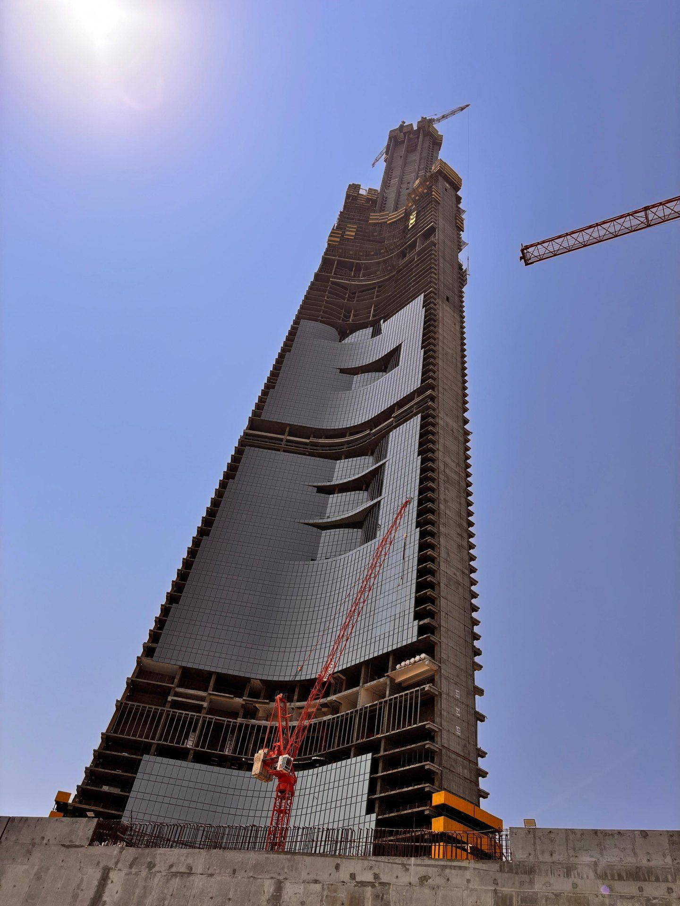
05
Parte 5 de 5
Lições aprendidas
Oito lições. Para cada uma: o que vimos em Jeddah e o que fazemos no Senna.
01O edifício
02A obra que vimos
03Engenharia em profundidade
04Jeddah e Senna lado a lado
05Lições aprendidas
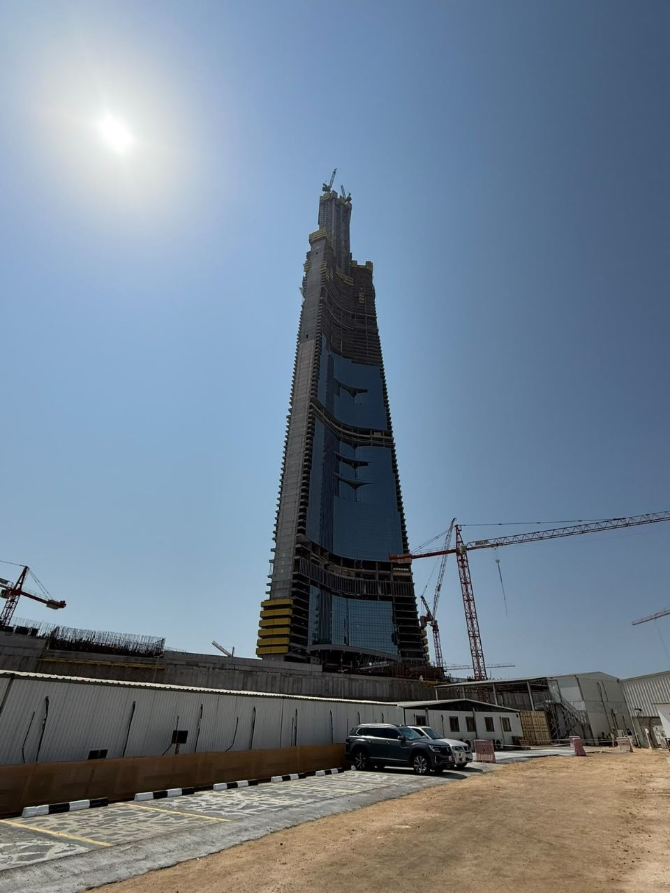
Lição 1
O núcleo dita o ritmo
O que vimos
O núcleo sobe à frente das alas; a fachada vem atrás, em blocos. Ciclo declarado de 5 dias em março. Média de cerca de 10,8 dias por pavimento entre abril e setembro.
No Senna
A meta é 4 dias e o histórico é 1 laje por semana. Fixar a defasagem entre núcleo e lajes no plano de ataque e medir o ciclo real desde o primeiro pavimento-tipo.
Kingdom Holding, 30/03/2026; cálculo Talls sobre Thornton Tomasetti e Newsweek; PWD, set. 2026.
05 · Lições aprendidas64
Lição 2 · leitura Talls
Bombear com reserva
O que vimos
Seis linhas saem da base e sobem em três pares pela prumada. O bombeamento é em estágio único, sem rebombeamento.
No Senna
Projetar a prumada com linhas de reserva desde o início. Levar a reologia já estudada com a PWD para a pressão de bombeamento a 550 m e testar em escala antes do trecho alto.
Fotos da visita (F039, F124); Newsweek, 07/2026; PWD, set. 2026.
05 · Lições aprendidas65
Lição 3
Concreto frio no calor
O que vimos
Todas as betoneiras com capa térmica no tambor. Gelo na água de amassamento do traço de 85 MPa e do radier.
No Senna
O bloco usou gelo para controlar a temperatura. Estender o controle de temperatura ao concreto de 100 MPa da superestrutura no verão: limite de recebimento, gelo e capa térmica nas betoneiras.
Vídeo da visita (V34); Sinn et al., 2016; Sinn e Peronto, 2019; PWD, set. 2026.
05 · Lições aprendidas66
Lição 4
Laboratório no canteiro
O que vimos
Prensa de 3.000 kN, cerca de 20 tanques de cura por imersão e sensores sem fio de maturidade, tudo ao pé da obra.
No Senna
Um cilindro de 150 mm a 100 MPa rompe a cerca de 1.770 kN: a prensa precisa de folga. Montar o laboratório no canteiro e usar sensores de maturidade para decidir desforma e subida das fôrmas.
Fotos e vídeos da visita (F104, V22, F143). Carga: 100 MPa × 17.671 mm² = 1.767 kN, cálculo Talls.
05 · Lições aprendidas67
Lição 5 · leitura Talls
Elevador de obra tem teto
O que vimos
A instalação Alimak vista vai até 650 m. Pelo menos cinco cabines numa mesma plataforma. Elevadores definitivos KONE que sobem com a obra.
No Senna
Os 550 m cabem num limite como esse. O gargalo passa a ser capacidade e paradas. Dimensionar o número de cabines por fase e avaliar o uso antecipado dos elevadores definitivos.
Fotos da visita (F052, F051); KONE, 08/10/2025.
05 · Lições aprendidas68
Lição 6
Fachada é logística
O que vimos
Quinze tipos de parede. Painéis içados por grua até plataformas de carga. Vigas em balanço com trilho na borda das lajes. Um método próprio para o pináculo.
No Senna
Definir com a LaufsED e o fornecedor o método de içamento e as estruturas provisórias de borda antes de fechar o projeto das lajes. Insertos e cargas entram no projeto estrutural.
Slides da Jangho e fotos da visita (F120, F158, F115).
05 · Lições aprendidas69
Lição 7
Segurança sobe junto
O que vimos
Pavimentos de refúgio indicados na planta de obra: 18, 38, 48 e 71. Escada de emergência do B2 ao topo. Bomba de incêndio provisória no topo e extintores em 6 pontos por pavimento.
No Senna
Plano de emergência de obra por faixa de altura, com refúgios provisórios e rede de incêndio que acompanha o topo da concretagem.
Fotos da visita (F065, F161 a F163).
05 · Lições aprendidas70
Lição 8 · leitura Talls
Outrigger quebra o ciclo
O que vimos
No Jeddah, os outriggers ficam nos andares técnicos. Entre eles, pavimento após pavimento, a fôrma e a armadura se repetem e sustentam o ritmo.
No Senna
Os 8 níveis de outrigger e cinta são exceções no ciclo. Planejar cada um como uma obra própria: fôrma, armadura, concretagem e prazo antecipados no cronograma.
Jeddah: Sinn et al., 2016; Thornton Tomasetti, 2026. Senna: PWD, set. 2026.
05 · Lições aprendidas71
Próximos passos
Perguntar à equipe do Jeddah
- Diâmetro, classe de pressão e pressão no topo das prumadas.
- Ciclo real do núcleo e das alas.
- Critério de desforma com sensores de maturidade.
- Função das vigas em balanço na borda.
- Elevadores de obra acima de 650 m.
Fazer no Senna
- Plano de ataque com defasagem núcleo e lajes.
- Prumada de bombeamento com reserva.
- Laboratório no canteiro e sensores de maturidade.
- Método de fachada antes do projeto das lajes de borda.
- Plano próprio para os 8 níveis de outrigger.
05 · Lições aprendidas72
Ação interna
A ficha pública do Senna no CTBUH precisa de correção
Campo
Skyscraper Center hoje
Comunicação FG e Talls
Altura
544 m
+550 m
Pavimentos
135
157
Projeto estrutural
WSP
Talls Solutions
Material
Steel Over Concrete
[Talls]
Arquitetura · Elevadores
Triptyque · Schindler
[FG]
FG e Talls revisam os campos e pedem a correção. O CVU Brasil é o canal.
skyscrapercenter.com/building/senna-tower/41557, consultado em outubro de 2026.
05 · Lições aprendidas73
Jeddah · setembro de 2026
Do topo do Jeddah, o Senna parece próximo.
FG Empreendimentos · Talls Solutions · PWD